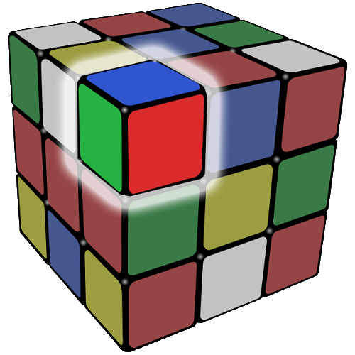
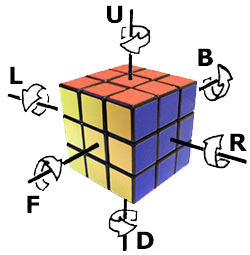
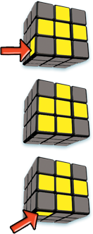

Stage 1:
Get to Know Your Rubik's Cube
A. Definitions of Rubik's Cube Pieces
Basically there are 3 type of pieces.
- Edge Pieces
- Pieces that contains 2 colors. There are 12 edge pieces where in the middle of rows.
- Corner Pieces
- Pieces that contains 3 colors. There are 8 corner pieces where in the corners of the cube.
- Center Pieces
- Pieces that contains 1 color. There are 6 center pieces where in the center of each side. Center pieces never move so they represent the color of their side.



B. Basic Notation for Describing Moves
We use 6 different letters to express the solving algorithms. All letters are intuitive so you don't need to worry about it. Here they are:
- R = Right --> Rotate right side of the cube clockwise in 90 degrees.
- L = Left --> Rotate left side of the cube clockwise in 90 degrees.
- U = Up --> Rotate top side of the cube clockwise in 90 degrees.
- D = Down --> Rotate bottom side of the cube clockwise in 90 degrees.
- F = Front --> Rotate front side of the cube clockwise in 90 degrees.
- B = Back --> Rotate back side of the cube clockwise in 90 degrees.
A letter followed by an apostrophe (') means counter-clockwise move when looking at that face directly.
A letter with the number 2 after means that turn that face in 180 degrees.
Stage 2:
Solve the White Cross
Holding Your Cube
Holding your cube with the white center piece on the top (U) face, you must create a white cross to the right. Much of this level is achieved with practice and by trial and error... But we have some tips to do.
Tips:
Note that there are more efficient ways to doing this but if you are new you can follow this instructions.
- Be sure to solve the sections of the white cross in the following order -blue, orange, green, red.
- Notice the edge piece colors above match the top white center piece and the side red and blue center pieces. This is how we know the edge pieces are in the correct positions.
- Keeping the white center piece on top, move the blue/white edge piece to the bottom (D) face, then rotate it on the bottom untill it is directly under the blue center piece. Now hold your cube so the blue center piece and blue/white edge piece are on the right (R) face. Then rotate the right face in 180 degrees.
- If your cube looks like this, hold your cube so the orange piece is on the right face and start solving the side with orange center piece the same way as started above.
- If your cube looks like this, do this algorithm while holding the corresponding center piece of the cube is on the right side
R' U F' U'
 Congratulations!
Congratulations!
If your cube looks like this, you can move to next stage.
Stage 3:
Solve The White Corners
Holding Your Cube
With the white cross on top face, you must solve the white corner pieces.
Tips:
- Corner pieces will have one white side plus 2 other colors.
- If the corner piece is already on the bottom face, then rotate the bottom face untill the corner is directly below its intended location. Once in that position, your cube may look like any of the 3 pictures on the right.
Then do the sequence below untill it is in the correct position.
R' D' R D
- Repeat this process for all white corners.
- If the corner piece is on the top face, move it to the bottom face by doing:
R' D' R
 Congratulations!
Congratulations!
If your cube looks like this, you can move to next stage.
Stage 4:
Solve The Middle Layer
Holding Your Cube
With the completed white layer on the bottom, now you have to solve the middle layer. Which means positioning the edge pieces in the correct place.
Tips:


- If your edge piece needs to go to the right side as shown the first picture above, do this algorithm:
U R U' R' U' F' U F
- If your edge piece needs to go to the left side as shown the second picture above, do this algorithm:
U' L' U L U F U' F'
- Continue doing these steps for all edge pieces.
- If one of your edge pieces is already in the middle row, but in the wrong position, then do either one of the sequential moves, and it will move to the top layer. Then you can move the piece its correct position.
 Congratulations!
Congratulations!
If your cube looks like this, you can move to next stage.
Stage 5:
Solve The Top Layer
Holding Your Cube
- Match the yellow pattern on the top face of your cube to one of the yellow patterns shown on the cubes below.
- Then follow the correct sequence.
1st Step: Make a yellow cross
| State | Figure | Algorithm |
|---|---|---|
| 1 |  |
F U R U' R' F' |
| 2 |  |
F U R U' R' F' |
| 3 |  |
F R U R' U' F' |
| 4 |  |
Go to 2nd step! |
2nd Step: Make all corners yellow
Now, look at the top face and match your top face to one of the states below.
| State | Description | Figure |
|---|---|---|
| 1 | If no corner cubes are yellow on the top face, you must have yellow left corner on left as shown. |  |
| 2 | If one corner cube is yellow match your top face as shown and do the sequence below. | |
| 3 | If any two cubes are yellow don't worry about their position. You must match the front face with a yellow left corner as shown. |
Do this sequence 1,2 or 3 times to achive a complete yellow top face. After each sequence, orient the cube to rematch the top face to appropriate state and repeat the sequence until all corners are yellow.
R U R' U R U2 R'
 Congratulations!
Congratulations!
If your cube looks like this, you can move to next stage.
Stage 6:
Complete The Last Layer
Holding Your Cube
With the yellow side of the cube on top, now twist the top face until at least 2 corners are in the right location. 2 corners must be in the right location as A,B or A,D or B,C as shown below. If all 4 corners are in right place the proceed to 2nd step.
1st Step: Position yellow corners correctly
While holding your cube as shown the right side, look at the top face. Place the 2 correct corners in the back A,B or diagonally A,D or B,C across from each other. 
If corners A and B are in the right place then to switch C and D, do the sequence below:
R' F R' B2 R F' R' B2 R2 U'
If you need to switch diagonal corners like B and C or D and A,then do the sequence once. Then, orient the cube so the 2 correct corners are in the back and do the sequence again.
 Congratulations!
Congratulations!
If your cube looks like this, you can move to 2nd step..
2nd Step: Position yellow edges correctly
If 1 edge is correct and 3 edges are incorrect orient the cube so the face with correct edge is back face. Then do the sequence below until you solve the cube! 
If all 4 edges are incorrect, then do the sequence below once, and then orient the cube so the face with correct piece is back face. Then do the sequence below until you solve the cube!
F2 U L R' F2 L' R U F2
 CONGRATULATIONS!
CONGRATULATIONS!
You didn't give up and eventually solved the cube!